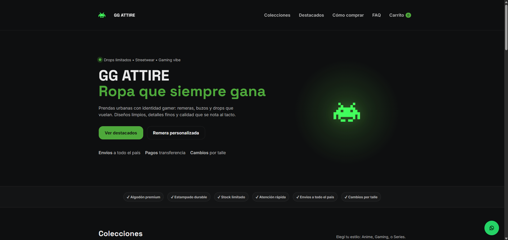

Enfoque
Web + Diseño + Branding
Soluciones visuales y funcionales para negocios, marcas y proyectos personales.
Desarrollo sitios web, identidad visual y proyectos digitales con una estética moderna, funcional y orientada a resultados.
Trabajo en la creación de marcas, webs, piezas visuales y experiencias digitales para negocios, emprendimientos y proyectos creativos.
Enfoque
Soluciones visuales y funcionales para negocios, marcas y proyectos personales.
Perfil
Combino diseño visual, estructura web y visión de negocio para presentar proyectos con impacto.
Ideal para
Sobre mí
Soy una persona orientada al desarrollo web, el diseño visual y la construcción de propuestas digitales. Me interesa crear experiencias modernas, claras y atractivas, adaptadas a cada proyecto y a cada tipo de cliente.
Mi trabajo combina criterio estético, estructura, enfoque comercial y capacidad de ejecución para transformar ideas en presentaciones sólidas, sitios funcionales y marcas con identidad.
Habilidades
Proyectos
Una selección de proyectos donde combiné desarrollo web, diseño visual e identidad de marca.

Marca de ropa · E-commerce · Branding
OnlineDesarrollo de identidad visual y sitio web para una marca de ropa urbana con inspiración gamer. El proyecto combina estética de marca, estructura de tienda y comunicación visual.
Bienestar · Servicios · Diseño web
En desarrolloSitio orientado a la presentación de servicios de bienestar, paquetes y contacto directo. El enfoque visual busca transmitir calma, profesionalismo y una identidad cálida.
Negocio local · Pedidos web · WhatsApp
OfflineDesarrollo de una experiencia web simple para mostrar productos, tomar pedidos y facilitar el contacto con clientes mediante WhatsApp para retiro en local.
Servicios
Puedo ayudarte a presentar tu negocio o proyecto con una imagen sólida, una web clara y una propuesta visual profesional.
Contacto
Trabajo en desarrollo web, diseño visual e identidad de marca para emprendimientos, negocios y proyectos personales. Si querés una presencia más profesional para tu idea, podés escribirme por cualquiera de estos medios.